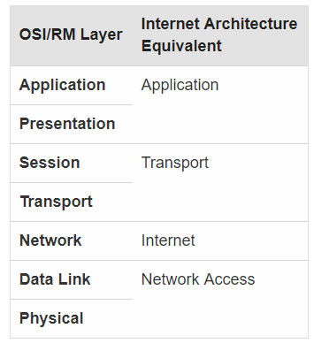

OSI Model
The OSI or Open Systems Interconnection is a model that explains how an application should communicate over a given network. This model is a top level view of the relationships between the seven OSI layers. The seven layers are described in the table below:
Seven Layers of the OSI Reference Model Layer 7: Application The services an application should be able to use. Layer 6: Presentation The layer in which the operating system transforms data from one format to another. Layer 5: Session The authentication and reconnection of a given user session. Layer 4: Transport The transport layer includes the delivery of packets and validation of errors. Layer 3: Network This layer routes the data based on the IP address. Layer 2: Data-link The layer involved in connecting to the physical layer. It uses two sub-layers: Logical Link Control Layer, and the Media Access Control Layer. Layer 1: Physical The physical layer uses hardware to move data from the internet service provider. Internet Architecture
The Internet Architecture uses a model that is very similar to the OSI model. The internet architecture uses just four of the layers from the OSI model. These layers are: Application, Transport, Internet, and Network Access Layer.
- The network access layer relates to the physical and data link layers of the OSI model. It looks at the Operating system's drivers, the NIC (network card) and the physical connections made.
- The internet layer is used for addressing and routing packets via the TCP/IP network.
- The transport layer utilizes the information between two hosts. It uses two different protocols: TCP and UDP.
- The application layer uses the presentation and application layers of the OSI model. It relies on protocols such FTP, SMTP, and SNMP.
For more information about the OSI model, click here